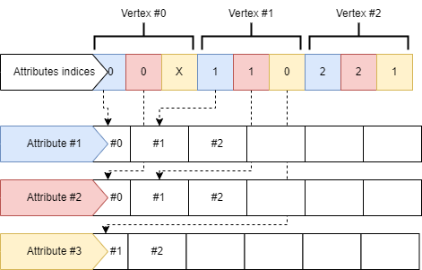

Render-Graphs
Un render-graph es una estructura en forma de grafo que indica qué pases de renderizado realizar, en qué orden y con qué recursos.
Es similar al grafo de ejecución de sistemas de la arquitectura ECS.
| Existen algunos pases de renderizado ya desarrollados que pueden ser útiles. |
Creación de nuevos pases de renderizado
Para implementar lógica de renderizado, se deben crear nuevos pases de renderizado y después añadirlos al render graph.
Estos pases deben heredar de la clase IRenderPass (o de otros pases de renderizado).
Para poder decidir el orden de ejecución de los pases, se deben indicar las dependencias a la hora de registrarlo. Estas dependencias indican qué pases deben ejecutarse antes del que vamos a añadir. Estas dependencias son transitivas: si A debe ejecutarse antes que B, y B debe ejecutarse antes que C, entonces A debe ejecutarse antes de C.
Si es el primer pase que queremos ejecutar, no será necesario indicar ninguna dependencia.
| Para un manejo más sencillo, indicar únicamente como dependencia el pase inmediatamente anterior. |
El pase de renderizado necesitará usar recursos GPU, como buffers o imágenes. Estos recursos deben indicarse como dependencias de buffer o de imagen del pase de renderizado.
| Usar recursos que no han sido declarados como dependencias del pase puede llevar a errores en el renderizado. |
Manejo de recursos
La estructura del render-graph está diesñada para automatizar la gestión de los recursos de renderizado. Esta estructura es dueña de las imágenes de renderizado y de los buffers usados.
También gestiona automáticamente la sincronización de recursos.
Los recursos se almacenan de tal manera que sea fácil implementar un diseño de renderizado bindless.
Imágenes
Las imágenes de renderizado (render targets) son creadas, gestionadas y destruidas por el render-graph.
Otras imágenes que se usen (como texturas de modelos 3D) se almacenan fuera del Render-Graph, pero aun así es necesario registrarlas.
Todas las imágenes se exponen a los shaders como un array de imágenes, facilitando la implementación de un renderizado bindless.
NOTA: También se pueden registar imágenes externas cuyo ciclo de vida no está gestionado por el render-graph. Un ejemplo podrían ser texturas de modelos, cuyo ciclo de vida es manejado por el sistema de assets.
Buffers de geometría
El render-graph implementado por OSKengine almacena la información de la geometría (vértices e índices) en varios buffers globales:
-
Un buffer por cada grupo de atributos de vértices, donde se guardarán todos los vértices de todos los modelos. Por defecto:
-
Buffer con las posiciones de los vértices.
-
Buffer con:
-
Vector normal.
-
Vector tangente.
-
Coordenadas de texturas (UV).
-
Color.
-
-
Buffer de animación con:
-
Índices de los huesos.
-
Pesos de los huesos.
-
-
-
Un buffer de índices de atributos, que indica qué índices usar para acceder a los atributos previamente mencionados.
-
Un único buffer global de índices, donde se guardarán todos los índices de todos los modelos.

Este diseño permite implementar fácilmente un modelo de renderizado bindless, aunque también se puede usar para implementar un pipeline de renderizado tradicional.
Registro de recursos
Los recursos manejados por el render-graph deben ser registrados antes de su compilación.
Imágenes
RgImageDependency imageDependency{};
imageDependency.imageRefId = "image_id";
imageDependency.range = GpuImageRange{};
imageDependency.stage = GpuCommandStage::COMPUTE_SHADER;
imageDependency.type = RgDependencyType::READ;
imageDependency.usage = GpuExclusiveImageUsage::SAMPLED;
imageDependency.shaderBinding.slotName = "image";
imageDependency.shaderBinding.bindingName = "finalImage";
imageDependency.viewConfig = GpuImageViewConfig::CreateSampled_Default();
/* * * * */
renderPass->AddImageDependency(imageDependency);Ciclo de vida
Al crear un Render-Graph, se encuentra en un estado de construcción.
En este estado, se puede:
-
Registrar buffers e imágenes.
-
Añadir pases de renderizado.
Una vez se haya configurado el Render-Graph, se puede compilar para pasar a estado usable:
renderGraph->Compile();-
Registro de imágenes de renderizado.
-
Registro de atributos de vértices.
-
Registro de recursos propios de los pases de renderizado.
-
Registro parcial de dependencias de recursos de los pases de renderizado.
-
Compilación del grafo de renderizado.
-
Registro de buffers de geometría.
-
Creación de buffers e imágenes.
-
-
Registro completo de dependencias de recursos.